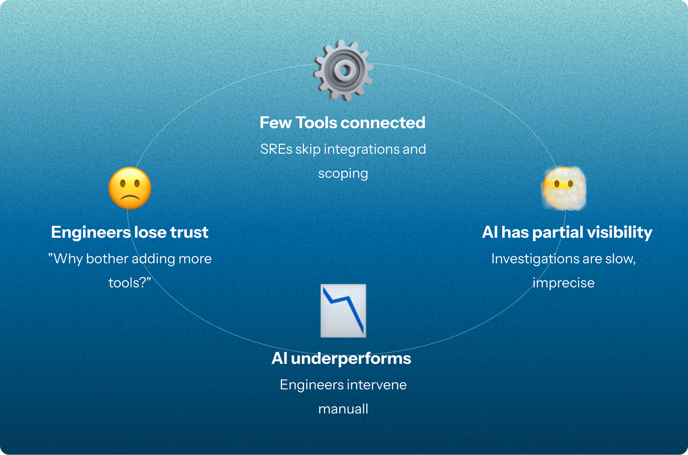
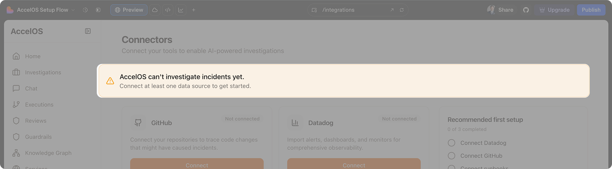
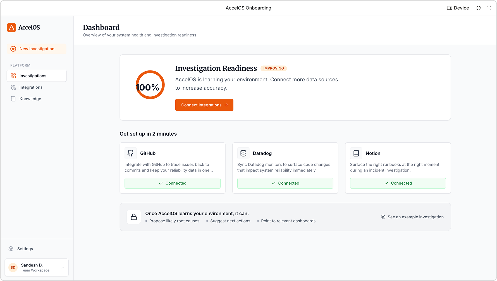
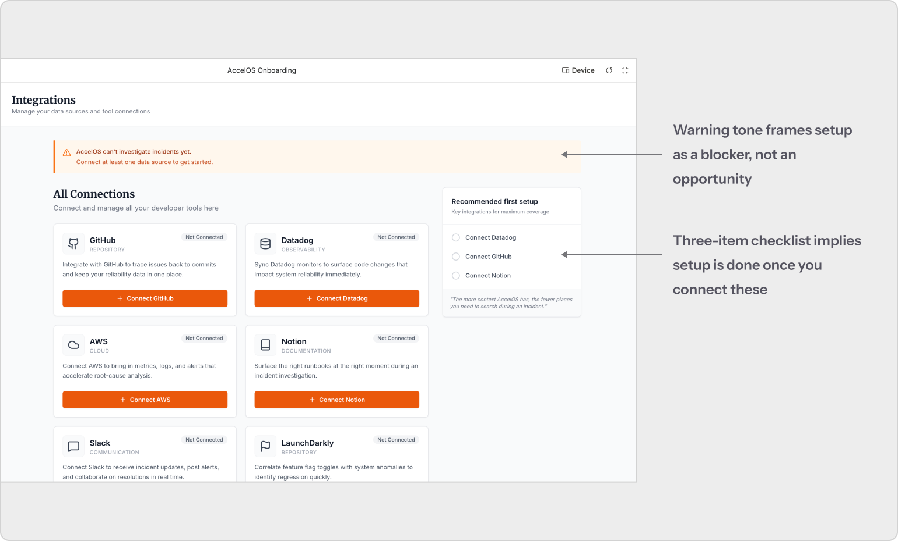
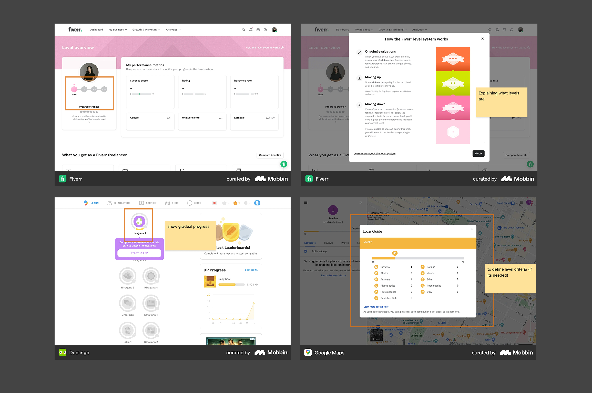
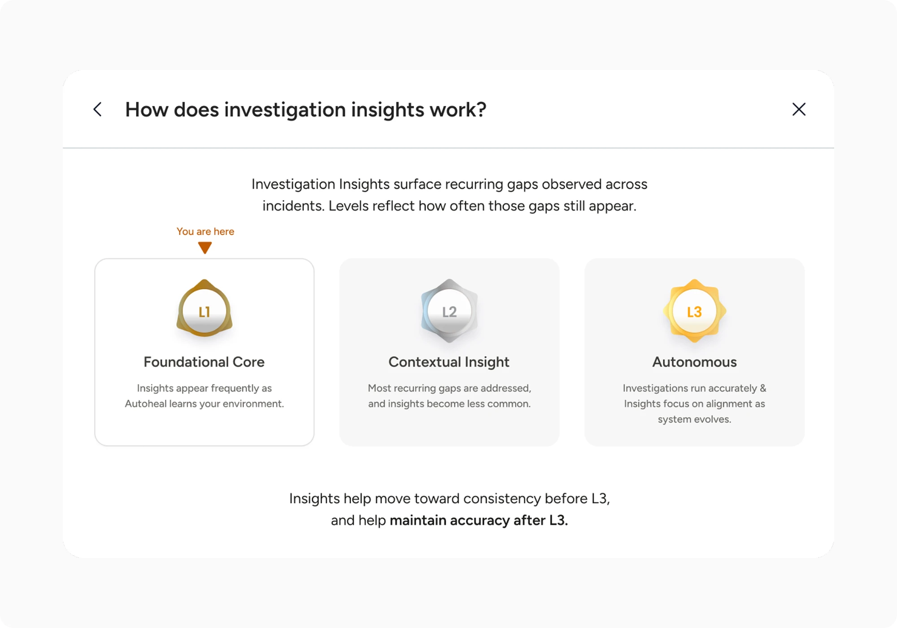
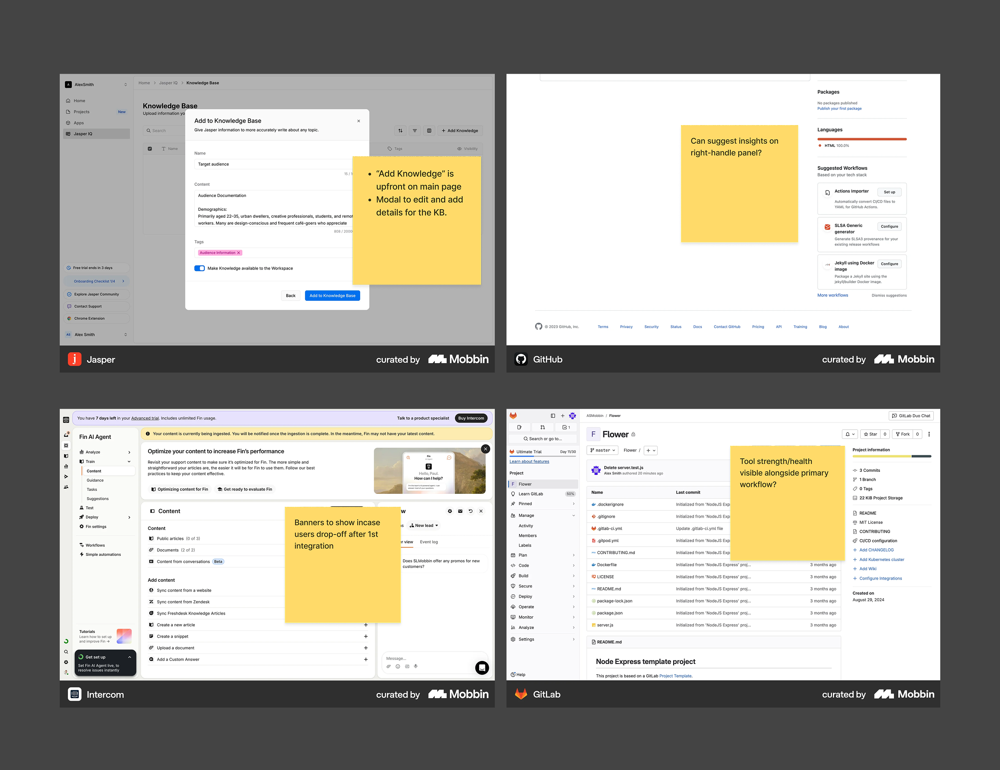

TL;DR
SRE teams lose hours investigating incidents with partial context. I designed a system that turns passive tool connections into a self-improving knowledge engine.
What is AccelOS?
An AI SRE platform that steps in before a human is paged
AccelOS is an AI-powered Site Reliability Engineering platform built for regulated enterprises. When something breaks in production, AccelOS’s AI agents step in before a human engineer is even paged, triaging alerts, investigating root causes, and proposing fixes. The goal: cut mean time to resolution (MTTR) from hours to minutes while maintaining the security and compliance standards regulated industries demand.
At the core of AccelOS’s accuracy is its Production Context Graph: a living map of services, teams, ownership, runbooks, and historical incident data. The richer this graph, the smarter and faster the AI performs. My work focused on making this graph richer.
Note: AccelOS has since been rebranded to Autoheal. This case study uses the product name at the time of the project.
The Problem
Low input, low output: a vicious cycle
AccelOS gets smarter with every tool an SRE connects and scopes. But most users weren’t adding enough integrations, leaving the AI to investigate with partial visibility, and undermining trust in the platform.

Brief
To turn passive integrations into a self-improving knowledge engine that helps AccelOS’s AI resolve production incidents faster and with less human intervention.
Research & Discovery
Understanding SRE workflows from the inside out
SRE tooling is dense with jargon (MTTR, MTTD, runbooks, on-call rotations, Datadog monitors) and deeply entrenched workflows. I had to build enough fluency, fast, to design effectively.
Secondhand research
Worked closely with engineering and product leadership to understand how SREs think about incidents and where the existing workflow lost them.
Workflow mapping
Mapped the incident lifecycle (alert to postmortem) to find natural touchpoints for knowledge contribution.
Competitive analysis
Studied how observability and on-call tools handled progressive onboarding.
Key Insights
01: The product told engineers what to do, not why it matters
The existing flow framed integrations as a setup task: “connect a data source to get started.” For SREs juggling incidents, this read as optional configuration, not a high-value investment. The product never showed what improves when you connect more.

02: The readiness score created a false finish line
The existing “Investigation Readiness” metric tied progress to tool connections alone. Once an SRE connected three tools and hit 100%, it signaled “you’re done.” But connecting tools is just the starting point. A truly effective knowledge base also needs the insights the AI uncovers during investigations to be reviewed and fed back in. The metric made a continuous process feel like a one-time setup task.

03: Investigations generated knowledge that went nowhere
During investigations, the AI surfaced patterns, flagged root causes, and identified gaps. But none of these findings looped back into the knowledge base automatically or through a simple review step. Every investigation started from scratch instead of building on the last one. The learning loop was broken.
Solutions
Three decisions that closed the loop
Each decision targets one break in the cycle: getting engineers to connect more tools, making the AI’s growth visible, and turning investigation findings into lasting knowledge.
Decision 01
How do we get engineers to invest in the AI’s context?
“The existing flow never connected the act of integrating a tool to what it improves for the AI.”
Before
The existing flow dropped users directly onto a flat integrations page. No explanation of what each tool unlocks for the AI, no sense of progress. It treated onboarding as a configuration task.

After · Final Decision
Integration-first onboarding
Make integrating tools (Datadog, PagerDuty, Slack, etc.) the primary path to enriching the knowledge base, so connecting feels like leveling up, not configuring software.
Decision 02
How do we make AI intelligence visible and trackable?
“The readiness metric treated a continuous process as a one-time setup task.”
Exploration
No AI SRE tool had solved this problem yet, so I looked cross-industry: how do platforms like Duolingo, Unity, and Google Maps visualize progress in systems that never truly “finish”? The pattern that kept surfacing was tiered progression, where each level unlocks something tangible rather than just filling a bar.

Final Decision
A three-tier levels system tied to real AI capability
Level 1 (Foundational Core), Level 2 (Contextual Insight), and Level 3 (Autonomous) each map to a distinct jump in what the AI can do. Levels appear at the moment of first success, inside the investigation insights panel, and on the home dashboard, so they’re always visible without needing a separate page.

Sub-decision
Timing the reveal: levels introduced at the moment of first success
Instead of explaining levels during onboarding, we introduce them right after the first tool is connected. The user sees where they stand, what’s ahead, and a clear next step, all while they’re in a forward-moving mindset.
Decision 03
How do we close the loop between investigations and the knowledge base?
“AI findings during investigations had no path back into the knowledge base.”
Exploration
We studied how other AI tools (Jasper, Intercom, and more) let users update their knowledge base. One common pattern stood out: the entry point for adding knowledge always lived where the primary action happened, not in a separate settings page. Accessibility and visibility over configuration.

Final Decision
A review panel inside the investigation page, plus contextual nudges
A persistent “Investigation Insights” CTA badges unreviewed findings. Each insight shows the gap, how often it’s recurred, and two actions: update or dismiss. During active investigations, quantified nudges show the cost of missing context in numbers SREs care about: time lost and data gaps. The engineer stays in control, but the AI does the work of surfacing what’s missing.
Impact
What shipped, and what it was meant to change
What I delivered in 3 weeks. Spent the first week building domain fluency and product context. Over the remaining two weeks, delivered a complete redesign of how SREs interact with AccelOS’s knowledge base: integration onboarding, a three-tier levels system, investigation insights, and contextual nudges.
Team response. The evolving knowledge base concept received strong buy-in from the team, validating the approach of turning passive integrations into a continuous, self-improving system.
Intended outcomes. The system was designed to increase integration adoption, close the gap between AI findings and the knowledge base, and reduce manual investigation time by giving the AI richer, continuously improving context.
Reflections
What I learned
Designing for a domain I didn’t know. I walked into SRE tooling with zero context. Terms like MTTR, runbooks, and on-call rotations were new to me. That first week of ramping forced me to learn fast, but it also gave me an advantage: I caught assumptions the team had stopped questioning, like the idea that a readiness score with a finish line made sense for a system that never stops learning.
Behavior change over feature delivery. The hardest part wasn’t designing screens. It was shifting the mental model from “connect tools to get started” to “every tool you connect makes the AI smarter.” The levels system and nudges weren’t features for their own sake. They were mechanisms to change how engineers perceived their role in the AI’s accuracy.
Embedding over destinations. Early conversations leaned toward a standalone knowledge management page. Research made it clear SREs wouldn’t visit it. Distributing the feature across existing touchpoints (onboarding, investigations, success states) was harder to design but far more likely to be used.